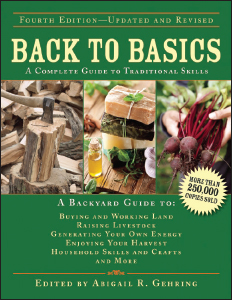
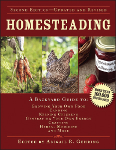
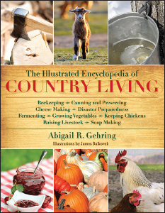
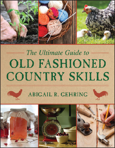
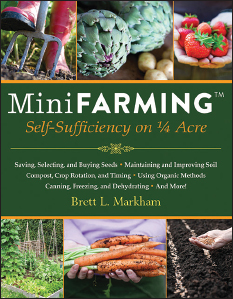

Back to Basics, Fourth Edition
A Complete Guide to Traditional Skills
Edited by Abigail R. Gehring
The classic guide to self-sufficiency, with more than 200,000 copies sold—now fully updated!
Anyone who wants to learn basic living skills—the kind employed by our forefathers—and adapt them for a better life in the twenty-first century need look no further than this eminently useful, full-color guide. Countless readers have turned to Back to Basics for inspiration and instruction, escaping to an era before power saws and fast-food restaurants and rediscovering the pleasures and challenges of a healthier, greener, and more self-sufficient lifestyle.
More than just practical advice, this is also a book for dreamers—even if you live in a city apartment, you will find your imagination sparked, and there’s no reason why you can’t, for example, make a loom and weave a rag rug. Complete with tips for old-fashioned fun (square dancing calls, homemade toys, and kayaking tips), this may be the most thorough book on voluntary simplicity available.
$27.95 Hardcover • ISBN 978-1-62914-369-9

Homesteading, Second Edition
A Backyard Guide to Growing Your Own Food, Canning, Keeping Chickens, Generating Your Own Energy, Crafting, Herbal Medicine, and More
Edited by Abigail R. Gehring
The companion to the bestseller Back to Basics for country, urban, and suburban folks—now fully updated!
Who doesn’t want to shrink their carbon footprint, save money, and eat homegrown food whenever possible? Even readers who are very much on the grid will embrace this large, fully illustrated guide on the basics of living the good, clean life. It’s written with country lovers in mind—even those who currently live in the city.
Whether you live in the city, the suburbs, or even the wilderness, there is plenty you can do to improve your life from a green perspective. Got sunlight? Start container gardening. With a few plants, fresh tomato sauce is a real option with your own homegrown fresh tomatoes. Reduce electricity use by eating dinner by candlelight (using homemade candles, of course). Learn to use rainwater to augment water supplies. Make your own soap and hand lotion. Consider keeping chickens for the eggs. From what to eat to supporting sustainable restaurants to avoiding dry cleaning, this book offers information on anything a homesteader needs—and more.
$27.95 Hardcover • ISBN 978-1-62914-366-8

The Illustrated Encyclopedia of Country Living
Beekeeping, Canning and Preserving, Cheese Making, Disaster Preparedness, Fermenting, Growing Vegetables, Keeping Chickens, Raising Livestock, Soap Making
Abigail R. Gehring
Packed with step-by-step instructions, useful tips, time-honored wisdom, and both illustrations and photographs, this might just be the most comprehensive guide to back to basics living ever published. Fans of Back to Basics, Homesteading, and Self-Sufficiency have been asking for a one-stop resource for all the subjects covered in that successful series. In response, Gehring has compiled a massive, beautifully presented, single volume that covers canning and preserving, keeping chickens, fermenting, soap-making, how to generate your own energy, how to build a log cabin, natural medicine, cheese-making, maple sugaring, farm mechanics, and much, much more.
Whether you own one hundred acres or rent a studio apartment in the city, this book has plenty of ideas to inspire you. Learn how to build a log cabin or how to craft handmade paper; find out how to install a solar panel on your roof or brew your own tea from dried herbs; Cure a ham, bake a loaf of bread, or brew your own beer. This book has something for everyone.
$29.95 Hardcover • ISBN 978-1-61608-467-7

The Ultimate Guide to Old-Fashioned Country Skills
Abigail R. Gehring
Whether you’re a suburbanite looking to live more simply or a die-hard homesteader interested in taking your garden to the next level, this guide is packed with step-by-step instructions, useful tips, vintage photographs and illustrations, and time-honored wisdom—creating one of the most comprehensive books on country skills available. This book is compiled of tested and practical experience passed down from generations of farmers and homesteaders.
Here readers can learn about:
• Creating a vegetable garden
• Canning and preserving
• Keeping poultry
• Natural medicine
• Bridge building
• Farm mechanics
• Crop rotation
• Cattle and dairying
• Foraging for wild food
• And much, much more!
Success comes to the person who works the most efficiently—not simply the person who works the hardest. Learn invaluable advice and tips for how to create a sustainable lifestyle and live off the land.
$24.95 Paperback • ISBN 978-1-62914-216-6

Mini Farming
Self-Sufficiency on ¼ Acre
Brett L. Markham
Start a mini farm on a quarter acre or less, provide 85 percent of the food for a family of four and earn an income.
Mini Farming describes a holistic approach to small-area farming that will show you how to produce 85 percent of an average family’s food on just a quarter acre—and earn $10,000 in cash annually while spending less than half the time that an ordinary job would require. Even if you have never been a farmer or a gardener, this book covers everything you need to know to get started: buying and saving seeds, starting seedlings, establishing raised beds, soil fertility practices, composting, dealing with pest and disease problems, crop rotation, farm planning, and much more. Because self-sufficiency is the objective, subjects such as raising backyard chickens and home canning are also covered along with numerous methods for keeping costs down and production high. Materials, tools, and techniques are detailed with photographs, tables, diagrams, and illustrations.
$18.95 Paperback • ISBN 978-1-60239-984-6